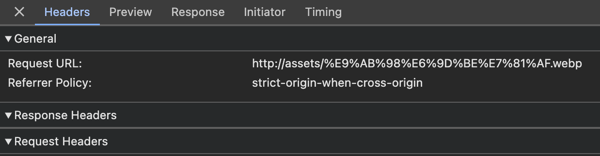
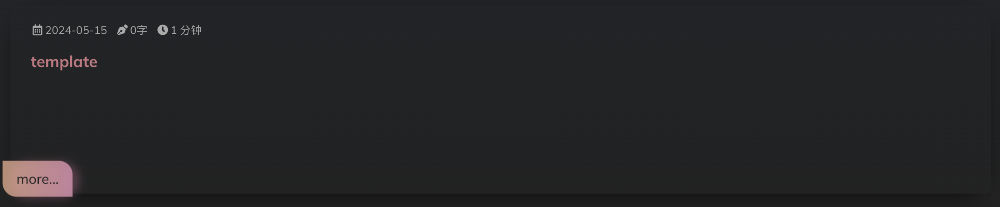
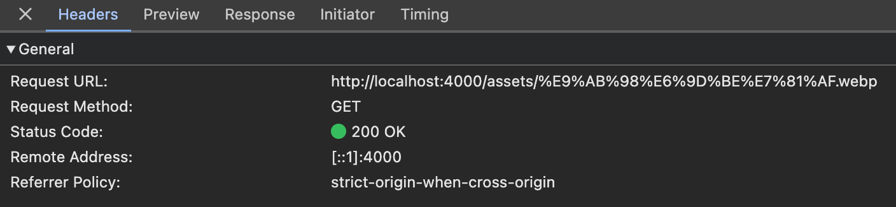
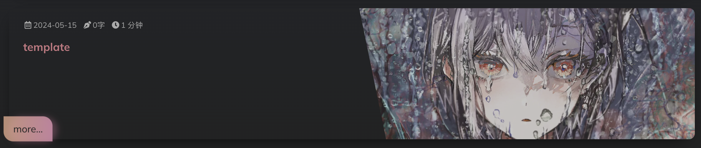

# 图片相对路径获取出错
--- | |
title: template | |
tags: | |
date: 2024-12-11 09:55:00 | |
# 封面图 | |
# cover: assets/Nichijou.webp | |
# gallery post（画廊类型文章） | |
# 若未设置 cover，则使用 photos 中第一张图片作为封面图 | |
photos: | |
- /assets/高松灯.webp | |
- /assets/Kirby.jpg | |
- https://wallhalla.com/wallpaper/83/variant/preview/2xl | |
--- |
可以看到这篇 post 的封面会使用 photos 的第一张图片，即 /assets/高松灯.webp
该文件目前位于 /source/_data/assets/高松灯.webp 目录下，但是获取错误：

可以看到浏览器直接将相对路径拼接在协议后面请求，于是报错，且封面为空：

但将后缀改为 .jpg 即 /assets/高松灯.webp => /assets/高松灯.jpg ，则可以获取：


所以很奇怪，怀疑可能和 _config.yml 中的 image 配置有关：
image: | |
enable: true # 开启图片预处理和自动 WebP 化 | |
options: | |
avif: false | |
webp: true # 预留配置项，现版本无作用 | |
quality: 80 # 质量，支持 1-100 的整数、lossless 或 nearLossless | |
effort: 2 # CPU 工作量，0-6 之间的整数 (越低越快) | |
replaceSrc: true # 自动替换生成 html 中的本地图片链接为 webp 链接 | |
# 我们更建议使用 Service Worker 来在用户侧实现 replaceSrc 的功能，这将能够以一种侵入式更小的方式实现链接替换 | |
exclude: |
解决方案：每次修改完都需要执行 hexo cl 和 hexo g 重新生成静态文件再启动项目
# 启用 replaceSrc 配置项导致线上项目获取 webp 文件出错
_config.yml 配置文件中有 image 这样一个配置，启用后可以对图片进行 webp 化

修改里面的 replaceSrc 配置则可以直接将插入的图片替换为对应的 webp 文件
例如，我插入的：

public 中生成的：

项目中请求的：

但是通过 hexo cl ， hexo g 以及 hexo d 部署到 Github Page 之后，发现请求失败，原因是仓库中没有对应的 webp 文件，也就是没有推送上去
解决方案：执行完 hexo cl 和 hexo g 之后，需要再执行 hexo s ，再执行 hexo d 即可
原因解释： hexo g 执行完之后， public 只有原生图片，而 webp 文件则是通过 hexo s 生成的，所以执行完 hexo s 之后目录里面才会存在 webp 格式